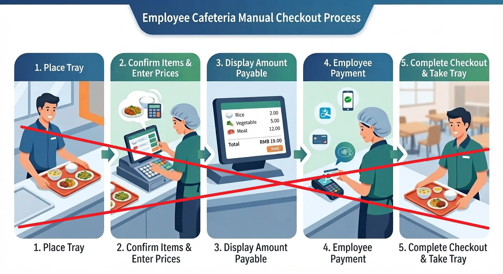
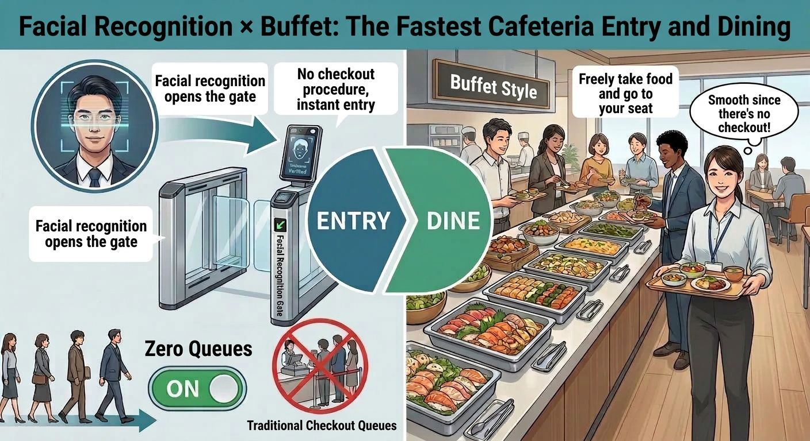

What you'll learn in this article
- What the existing three methods (image recognition, RFID, weighing) can and cannot do
- The "ultimate way" to eliminate queues at the root — how the face-recognition gate × flat-rate billing model works
- The pros and cons of the ultimate method, plus the fairness and pricing challenges
- Which types of cafeterias this method suits
- A suggested heading and copy to add to your existing landing page
Losing more than 10 minutes of a 60-minute lunch break to the "checkout queue" — this is a common frustration across many company cafeterias.
At Izumo Soan, we have delivered high-speed checkout of just 3–5 seconds per person through three smart-cafeteria solutions: AI image recognition, RFID, and weighing. But for the need to "eliminate the queue itself, at the root," there is an even more far-reaching ultimate method.
What the Existing Three Methods Can Do — and Their Limits
Our current smart-cafeteria solutions let you select the optimal checkout method for your cafeteria from the following three approaches.
- Image recognition checkout: Just place the tray and dishes are automatically recognized in about 1 second — no special dishware required.
- RFID checkout: Just place RFID-embedded dishware and 30+ items are read with high accuracy in 1 second.
- Weighing checkout: Charges fairly by the gram and significantly reduces food waste in buffet-style settings.
These methods shorten the "recognition" and "payment" time at the register to 3–5 seconds, greatly reducing both queues and register staff. Even so, at peak times users holding trays still accumulate in front of the register, and a certain amount of queuing inevitably occurs.
The Ultimate Way to Eliminate Queues
"Reduce the five manual-checkout steps to exactly zero"
The ultimate way to eliminate queues at the root is a new checkout concept: flat-rate billing × face-recognition gate. Conventional staffed registers and auto-registers required a five-step manual checkout process like the one below.
- Carry your tray and line up at the register
- Recognition of the dishes (manual or automatic)
- Confirm the total amount
- Prepare a payment method and pay
- Receive a receipt, etc.
The ultimate method makes these five steps entirely unnecessary.

How It Works: The Face-Recognition Gate Identifies Only the Diner and Bills a Flat Rate Automatically
The basic flow of the ultimate method is very simple.
- Install a face-recognition gate at the cafeteria entrance and identify the user on entry
- Every user who enters becomes subject to a "flat rate per visit," regardless of how much they eat
- Billing is processed automatically in the backend — no recognition or payment action occurs at any register
With this method, there is no need to recognize the dishes on the tray and no payment operation is required. In other words, because the checkout steps themselves become zero, the act of "lining up" in front of a register disappears, and queues theoretically no longer occur.

In fact, this ultimate method is a real-world example already realized in local company cafeterias by our Chinese partner. In some company cafeterias in China, a system that performs face recognition at the entrance gate and automatically bills a fixed amount per user is already in place and operating. Izumo Soan can offer this proven solution tailored to the Japanese market.
Advantages: Zero Queues and Operational Simplicity
This ultimate method offers advantages that conventional checkout systems do not.
- The register itself becomes unnecessary, so no checkout-waiting queue forms
- No need to recognize dishes on the tray, so the system configuration is simpler
- No payment operations such as cash, IC card, or QR code — greatly reducing user stress
- Checkout labor can be brought close to zero, making it easier to cut operating costs
- The cafeteria flow can be designed as "just enter, just exit," removing congestion bottlenecks
For companies that want to devote as much of the lunch-break time as possible to "eating and resting," this becomes a highly attractive option.
Disadvantages: Fairness and Pricing Challenges
On the other hand, this ultimate method also has clear disadvantages.
- Because both light eaters and heavy eaters pay the same amount, light eaters are prone to complaints of feeling "overcharged"
- If the flat rate is set high, overall usage may decline
- From the perspective of calorie control and nutrition management, it becomes difficult to obtain per-menu data
For this reason, in operation it is important to set up a subsidy from the company toward cafeteria operations, achieving an attractive "low flat price" for users.
Which Cafeterias It Suits
This ultimate method suits cafeterias that meet conditions like the following.
- Large company cafeterias with consistently high daily usage and high visit frequency
- Organizations with a clear policy of "we want to eliminate queues, period" or "we want to bring checkout work as close to zero as possible"
- An environment where the company treats the cafeteria as part of its employee benefits and can provide a certain subsidy
The existing three methods (image recognition, RFID, weighing) are effective solutions that balance "fairness" and "checkout speed." By adding the face-recognition gate × flat-rate billing ultimate method as an option for benefit-focused companies, you can offer a new choice that not only "reduces queues" but "eliminates queues."
The Three Methods vs. the Ultimate Method
| Item | Existing three methods (image recognition · RFID · weighing) | Ultimate method (face-recognition gate × flat rate) |
|---|---|---|
| Checkout speed | 3–5 seconds per person | Checkout steps themselves are zero |
| Queue | Greatly shortened (some accumulation remains) | Theoretically does not occur |
| Dish recognition | Required (automatic via AI/RFID/weighing) | Not required |
| Payment operation | Face recognition · QR · IC card | Not required (entry = automatic billing) |
| Fairness | Charged according to amount eaten / items | Flat regardless of amount (requires subsidy design) |
| Suited cafeterias | Cafeterias in general that want both fairness and speed | Benefit-focused · large-scale · zero-queue oriented |
Not sure which to choose? → We'll ask about your cafeteria environment and operating policy and recommend whether the existing three methods or the ultimate method is best. We also offer a free PoC (proof of concept) where you can test multiple methods in your actual cafeteria.
📞 Apply for a Free PoC
AI image recognition, RFID, weighing checkout — we let you test the method best suited to your cafeteria in a real environment.
We handle equipment delivery, installation, and collection. No cost involved.